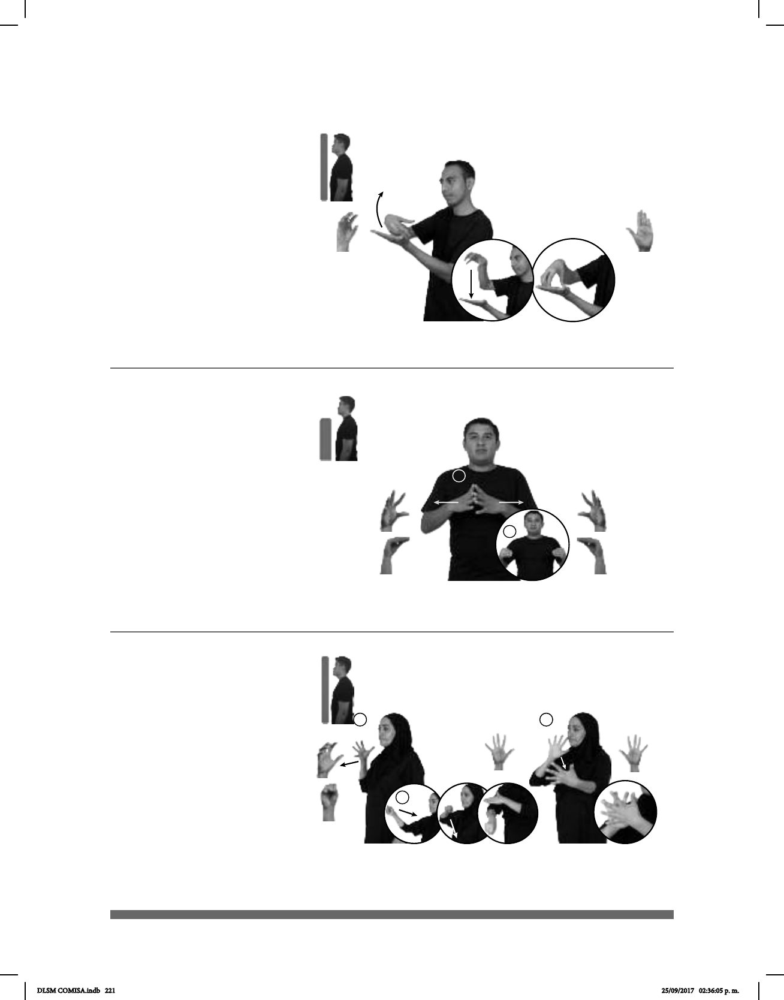

221
Seña: SS
Seña que pasa de 5.4
a O.9
Las palmas se encuentran
frente a frente.
A la altura del pecho del
centro hacia a los lados.
Las manos parten de un
mismo punto y luego se abren hacia los
lados mientras el pulgar toca los dedos
de la mano.
v. intr. Dejar algo o alguien
de ser visible o perceptible, o perderse
una persona o una cosa.
(5-G 86)
______neg_
LENTES pos-MI DESAPARECER, YO NO-VER
Mis lentes desaparecieron, no puedo ver bien.
Seña: SC: I. y II. SB
I. MD 5.25, MB B-P.2; II.
MD 5.12, MB B-P.2
I. MD la palma inicia hacia
adentro y termina hacia abajo. MB palma
hacia arriba; II. MD palma hacia abajo. MB
palma hacia arriba.
I. La MD inicia sobre MB y
termina a la altura del cuello. MB a la
altura del pecho; II. La MD inicia a la altura
del cuello y termina MD sobre MB.
I. La mano se mueve de atrás
mientras el brazo se mueve formando un
arco; II. MD recto.
loc. adv. Con dinero en efectivo
y en un solo pago.
(5-G 85)
pro-ÉL YA COMPRAR #TV CONTADO
Él compró esa televisión de contado.
1
2
3
Seña: SC: I. SM; II. SB; III. SB
I. Seña que pasa de 5.16 a
S.1; II. MD S.1, MB B-P.2; III. MD y MB
5.1
I. Palma hacia la izquierda; II.
MD y MB palmas hacia abajo; III. Las
palmas se encuentran frente a frente.
I. A la altura del hombro; II. MD
del hombro a la cintura. MB de la cintura al
pecho; III. MD y MB a la altura del pecho.
I. Recto hacia enfrente; II.
MD y MB recto; III. La MD golpea la MB
en
línea recta.
1. adj. Privado provisionalmente
de libertad por una autoridad competente. 2.
v. tr. Detener a alguien y recluirlo en prisión.
1
2
(5-G 87)
_muy
YA pro-ÉL ARRESTADO ESO FEO VERDAD
Él fue arrestado, qué feo.
DLSM COMISA.indb 221 25/09/2017 02:36:05 p. m.